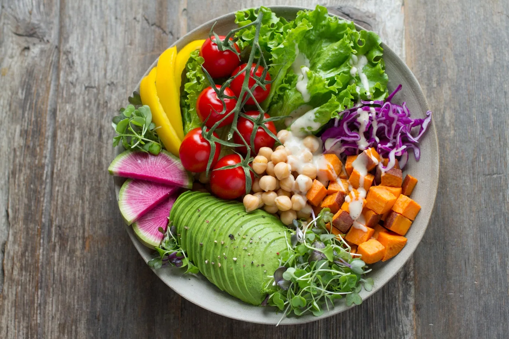

Ideias de cardápio para cada ocasião.
Combinações prontas para o almoço de domingo, festas, dias corridos e viagens gastronômicas sem sair de casa.

Almoço de domingo em família
Feijoada ou lasanha como prato principal, salada verde com laranja e pudim de sobremesa.
Festa de aniversário em casa
Coxinhas, brigadeiros e bolo de chocolate. Calcule as quantidades antes de comprar.
Arraiá e festa junina
Bolo de milho, pão de queijo e baião de dois para quem quer algo salgado e bem brasileiro.
Jantar rápido de semana (até 30 minutos)
Carbonara, pad thai ou estrogonofe com arroz já pronto da marmita.
Café da tarde com cheirinho de casa
Bolo de cenoura com cobertura, pão caseiro quentinho e pão de queijo.
Noite de volta ao mundo
Monte um menu temático: ceviche de entrada, tacos al pastor e crêpes Suzette.
Churrasco com os amigos
Calcule carne, carvão e bebidas, sirva pão de alho e finalize com pudim gelado.
Sabores do Norte
Tacacá no fim de tarde e pato no tucupi para uma ocasião especial.
Air fryer na rotina
Batata frita crocante, coxinha assada e pão de queijo sem óleo extra.
Semana organizada
Planeje 5 marmitas, gere a lista de compras e congele o que sobrar.